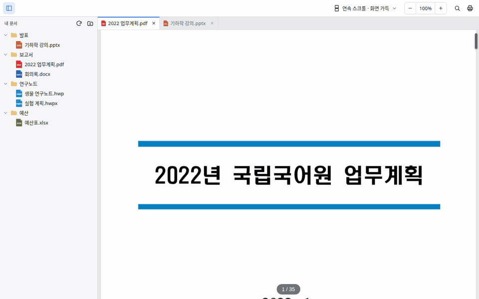
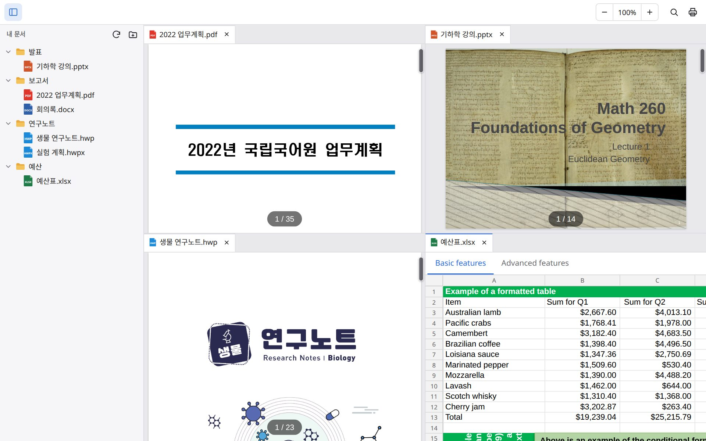
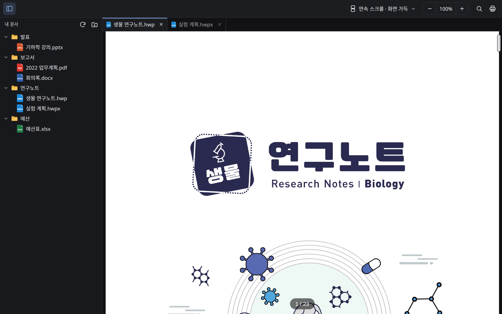
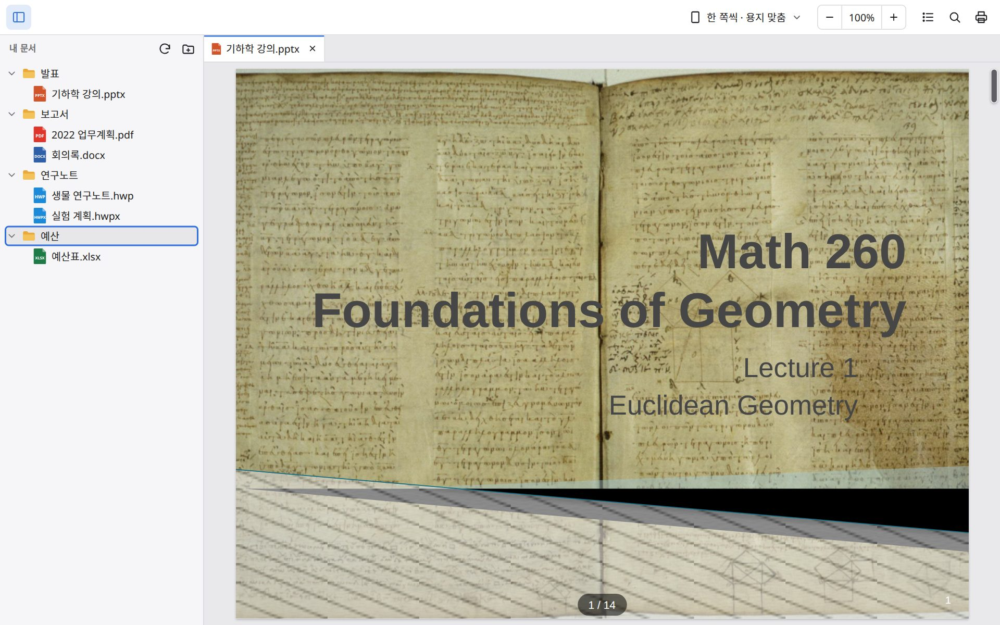

Doc Viewer
PDF, 한글, 워드, 엑셀, 파워포인트 문서를 보는 데스크톱 뷰어입니다. 인터넷 없이 Windows, macOS, Linux에서 씁니다.
PDF, 한글, 워드, 엑셀, 파워포인트 문서를 보는 데스크톱 뷰어입니다. 인터넷 없이 Windows, macOS, Linux에서 씁니다.
문서는 앱 안에서 그리고, 어디에도 올리지 않습니다.
PDF, 한글(HWP/HWPX), DOC/DOCX, XLS/XLSX/CSV, PPT/PPTX, 마크다운, 텍스트. 확장자가 틀려도 내용으로 형식을 알아봅니다.
탭이나 파일을 문서 가장자리로 끌어 놓으면 화면이 나뉩니다(최대 4칸). 경계선을 끌어 크기를 바꿉니다.
사이드바에서 폴더를 열고 여러 문서를 탭으로 띄웁니다. 이름 바꾸기와 삭제도 사이드바에서 합니다.
다시 켜면 열려 있던 탭, 보던 쪽, 확대, 나눈 화면이 그대로 열립니다. 닫은 탭은 Ctrl+Shift+T로 다시 엽니다.
PPTX에 들어 있는 동영상과 소리를 슬라이드에서 재생합니다(MP4, MP3 등 시스템이 지원하는 형식).
계정이 없고 사용 기록을 모으지 않습니다. 설치한 뒤에는 인터넷이 필요 없습니다.
탭과 파일을 끌어 화면을 나누는 모습입니다.




아직 코드 서명이 없어서 처음 열 때 경고가 뜰 수 있습니다.
설치 프로그램(추천) 또는 MSI 패키지.
설치 프로그램 (.exe) .msiSmartScreen이 뜨면 추가 정보 → 실행. WebView2가 없는 구형 Windows 10은 설치할 때 한 번 내려받습니다.
Apple 실리콘·Intel Mac 공용 파일 하나.
디스크 이미지 (.dmg)아직 공증 전이라 앱을 우클릭 → 열기, 또는 시스템 설정 → 개인정보 보호 및 보안에서 허용합니다.
| 종류 | 확장자 |
|---|---|
| 한글 | hwp, hwpx, hwt |
| Word | doc, docx, docm, dot, dotx, dotm |
| Excel | xls, xlsx, xlsm, xlt, xltx, xltm, csv, tsv |
| PowerPoint | ppt, pptx, pptm, pps, ppsx, pot, potx |
| 텍스트·데이터 | md, txt, log, json, xml, toml, yaml 등 글자 파일 |
아니요. 서버가 없습니다. 내 디스크의 파일을 읽어 앱 안에서 그립니다.
아니요. 보기만 할 수 있습니다.
오픈소스 엔진으로 그리고, 문서에 들어 있는 글꼴은 아직 쓰지 않고 시스템 글꼴로 보여 줍니다. 예시 파일과 함께 이슈를 남겨 주세요.
Android 앱은 Google Play 출시를 준비하고 있습니다.